개발툴 그림 따라 하기
위에서 아래로 한 단계씩 따라 하세요. 공식 실제 화면과 교재용 키보드 그림은 각 카드에 구분했습니다. 이미지의 큰 안내문에 클릭할 곳과 완료 표시를 함께 적었습니다.
완료 확인 VSCodeUserSetup…exe(Windows) 또는 VSCode…zip(Mac) 파일이 다운로드 폴더에 있어요.
클릭 순서를 단순화한 교재용 그림입니다. 실제 서비스 화면 캡처는 아닙니다. 실제 화면에서는 같은 메뉴 이름을 찾아가세요.
완료 확인 파란 아이콘의 Visual Studio Code 창이 열립니다. 설치 파일을 다시 여는 대신 시작 메뉴에서 Visual Studio Code를 검색해 실행할 수 있어요.
클릭 순서를 단순화한 교재용 그림입니다. 실제 서비스 화면 캡처는 아닙니다. 실제 화면에서는 같은 메뉴 이름을 찾아가세요.
완료 확인 VS Code 창이 열리고 응용 프로그램 폴더에 앱이 있습니다. ZIP 파일 자체를 Dock에 넣지 마세요.
클릭 순서를 단순화한 교재용 그림입니다. 실제 서비스 화면 캡처는 아닙니다. 실제 화면에서는 같은 메뉴 이름을 찾아가세요.
Windows 바탕화면 빈 곳 우클릭 → 새로 만들기 → 폴더. 이름을 counseling-practice로 적어요. macOS는 Finder에서 파일 → 새로운 폴더를 사용해요.
완료 확인 빈 counseling-practice 폴더가 하나 생겼어요.
키보드 조작을 설명하는 교재용 그림입니다. 실제 프로그램 화면 캡처는 아닙니다.
할 일 VS Code 위쪽 File → Open Folder… → 방금 만든 counseling-practice 선택 → Select Folder(맥은 Open).

완료 확인 왼쪽 Explorer 위에 COUNSELING-PRACTICE가 보여요. 공식 예시 그림의 VSCODE101은 폴더 이름 예시입니다.
직접 만든 빈 폴더에서 Workspace Trust 질문이 나오면 그 폴더임을 확인하고 신뢰를 선택하세요. 다른 출처의 작업 폴더는 내용을 확인한 뒤 결정합니다.
원본 화면: Microsoft VS Code 문서. 원본 화면 위에 교재의 안내 표시를 겹쳐 두었습니다. 운영체제·버전에 따라 아이콘 위치와 예시 값은 달라질 수 있어요.
할 일 왼쪽 종이 두 장 모양 Explorer를 누르고, 폴더 이름 줄의 종이+ 아이콘(New File)을 눌러요.

완료 확인 폴더 아래에 파일 이름을 적는 칸이 열려요.
원본 화면: Microsoft VS Code 문서. 원본 화면 위에 교재의 안내 표시를 겹쳐 두었습니다. 운영체제·버전에 따라 아이콘 위치와 예시 값은 달라질 수 있어요.
할 일 파일 이름 칸에 index.html을 정확히 적고 Enter. 오른쪽 빈 편집 영역에 이 장의 첫 HTML 코드를 넣어요.

완료 확인 상단 탭과 왼쪽 목록에 index.html이 보여요. index.html.txt가 아니어야 합니다.
원본 화면: Microsoft VS Code 문서. 원본 화면 위에 교재의 안내 표시를 겹쳐 두었습니다. 운영체제·버전에 따라 아이콘 위치와 예시 값은 달라질 수 있어요.
Windows는 Ctrl+S, macOS는 ⌘+S. 코드를 바꿀 때마다 저장해요.
완료 확인 탭 이름 옆의 미저장 점이 사라져요. 코드를 저장한 것이고, 아직 브라우저 화면을 새로 그린 것은 아닙니다.
키보드 조작을 설명하는 교재용 그림입니다. 실제 프로그램 화면 캡처는 아닙니다.
Chrome을 열고 Ctrl+O(맥은 ⌘+O) → counseling-practice 안의 index.html 선택 → 열기. 또는 파일 탐색기에서 index.html을 두 번 눌러요.
완료 확인 코드 대신 큰 제목과 소개 문장이 보이면 성공입니다.
키보드 조작을 설명하는 교재용 그림입니다. 실제 프로그램 화면 캡처는 아닙니다.
HTML 제목 한 글자 변경 → Ctrl+S → 브라우저로 이동 → 새로고침 버튼 또는 Ctrl+R(맥은 ⌘+R).
완료 확인 바꾼 글자가 브라우저에 나타납니다. 이전 화면이면 파일 경로와 저장 여부를 먼저 확인하세요.
키보드 조작을 설명하는 교재용 그림입니다. 실제 프로그램 화면 캡처는 아닙니다.
할 일 github.com에서 본인 계정으로 로그인한 뒤 오른쪽 위 + → New repository. 저장소는 파일과 수정 이력을 모아 둘 공간이에요.

완료 확인 새 저장소 이름을 적는 화면이 열려요.
원본 화면: GitHub Docs. 원본 화면 위에 교재의 안내 표시를 겹쳐 두었습니다. 운영체제·버전에 따라 아이콘 위치와 예시 값은 달라질 수 있어요.
할 일 Repository name에 본인 GitHub 사용자 이름.github.io를 적어요. 예: 사용자 이름 mindlearner면 mindlearner.github.io. Public 선택, Add README 켜기 → Create repository.

완료 확인 내계정.github.io 저장소가 열려요. 공식 그림의 octocat은 예시 이름이고 여러분 계정으로 바꿔야 해요.
원본 화면: GitHub Docs. 원본 화면 위에 교재의 안내 표시를 겹쳐 두었습니다. 운영체제·버전에 따라 아이콘 위치와 예시 값은 달라질 수 있어요.
할 일 저장소의 Code 탭 → Add file → Upload files. publish-site 폴더 자체 안으로 들어가 파일들을 선택하거나 드래그합니다.

완료 확인 저장소 최상위에 index.html·style.css·app.js가 올라갈 미리보기가 보여요. publish-site/index.html이라는 한 겹 아래 경로가 되지 않게 확인합니다.
원본 화면: GitHub Docs. 원본 화면 위에 교재의 안내 표시를 겹쳐 두었습니다. 운영체제·버전에 따라 아이콘 위치와 예시 값은 달라질 수 있어요.
완료 확인 Code 탭에서 main 브랜치 최상위 파일을 볼 수 있어요. 커밋은 수정 내용을 이력 한 묶음으로 확정하는 작업입니다.
클릭 순서를 단순화한 교재용 그림입니다. 실제 서비스 화면 캡처는 아닙니다. 실제 화면에서는 같은 메뉴 이름을 찾아가세요.
할 일 저장소 위쪽 Settings → 왼쪽 Code, planning, and automation 아래 Pages. 개인 계정 Settings가 아니라 이 저장소의 Settings입니다.

완료 확인 Build and deployment 설정이 보여요.
원본 화면: GitHub Docs. 원본 화면 위에 교재의 안내 표시를 겹쳐 두었습니다. 운영체제·버전에 따라 아이콘 위치와 예시 값은 달라질 수 있어요.
할 일 Source에서 Deploy from a branch 선택 → Branch: main → Folder: /(root) → Save. 실제 브랜치 이름이 다르면 파일이 있는 브랜치를 고르세요.

완료 확인 Pages 설정에 배포 상태와 Visit site 주소가 생겨요. 최초 공개와 수정 반영은 몇 분, 경우에 따라 약 10분 걸릴 수 있어요.
원본 화면: GitHub Docs. 원본 화면 위에 교재의 안내 표시를 겹쳐 두었습니다. 운영체제·버전에 따라 아이콘 위치와 예시 값은 달라질 수 있어요.
완료 확인 내가 등록하려는 철자와 도메인 종류가 신청 목록에 정확히 표시돼요.
클릭 순서를 단순화한 교재용 그림입니다. 실제 서비스 화면 캡처는 아닙니다. 실제 화면에서는 같은 메뉴 이름을 찾아가세요.
완료 확인 본인 관리 목록에 새 도메인이 나타나요. 등록이 끝났어도 아직 사이트는 연결 전일 수 있습니다.
클릭 순서를 단순화한 교재용 그림입니다. 실제 서비스 화면 캡처는 아닙니다. 실제 화면에서는 같은 메뉴 이름을 찾아가세요.
할 일 오른쪽 위 프로필 사진 → Settings → 왼쪽 Pages → Add a domain → example.com 대신 자신의 루트 도메인 입력. 이 단계는 개인 계정 설정입니다.

완료 확인 DNS TXT 이름과 고유 확인값이 화면에 나타나요.
원본 화면: GitHub Docs. 원본 화면 위에 교재의 안내 표시를 겹쳐 두었습니다. 운영체제·버전에 따라 아이콘 위치와 예시 값은 달라질 수 있어요.
할 일 GitHub 화면에 나온 TXT 레코드 이름과 값을 가비아 DNS에 추가합니다. 호스트 입력이 도메인을 자동으로 붙이는 방식이면 _github-pages-challenge-내계정 부분만 넣고 완성 이름을 확인하세요.

완료 확인 확인 이름이 _github-pages-challenge-내계정.내도메인이 되고, 값은 GitHub가 본인에게 준 고유 문자열이어야 합니다.
표시된 예시 확인값을 그대로 복사하지 마세요. TXT는 소유권 확인용이고 웹파일 업로드용이 아닙니다. 반영 후 GitHub의 Verify/Continue verifying을 눌러 Verified를 확인하고 이 TXT는 유지합니다.
원본 화면: GitHub Docs. 원본 화면 위에 교재의 안내 표시를 겹쳐 두었습니다. 운영체제·버전에 따라 아이콘 위치와 예시 값은 달라질 수 있어요.
완료 확인 저장소가 대표 주소를 기억합니다. 브랜치 공개에서는 CNAME 파일이 생성될 수 있어요. 아직 DNS 검사 대기여도 다음 단계를 진행합니다.
클릭 순서를 단순화한 교재용 그림입니다. 실제 서비스 화면 캡처는 아닙니다. 실제 화면에서는 같은 메뉴 이름을 찾아가세요.
| 종류 | 호스트 | 값 |
|---|---|---|
| A | @ | 185.199.108.153 |
| A | @ | 185.199.109.153 |
| A | @ | 185.199.110.153 |
| A | @ | 185.199.111.153 |
| CNAME | www | 내계정.github.io |
| TXT | GitHub가 준 확인 이름 | GitHub가 준 고유 값 |
완료 확인 다섯 줄이 기록 목록에 보입니다. 네임서버가 외부 업체라면 그 업체 DNS에서 같은 종류의 기록을 편집해야 해요.
클릭 순서를 단순화한 교재용 그림입니다. 실제 서비스 화면 캡처는 아닙니다. 실제 화면에서는 같은 메뉴 이름을 찾아가세요.
완료 확인 내 주소에서 페이지가 열리고 https로 표시됩니다. DNS나 인증서 준비는 즉시 끝나지 않을 수 있어요.
클릭 순서를 단순화한 교재용 그림입니다. 실제 서비스 화면 캡처는 아닙니다. 실제 화면에서는 같은 메뉴 이름을 찾아가세요.
할 일 GitHub의 같은 저장소 Code 탭 → Add file → Upload files → 바뀐 index.html·style.css·app.js 선택. 처음 올린 것과 같은 파일 이름·경로로 넣어요.
완료 확인 파일 추가가 아니라 기존 경로의 새 내용으로 반영할 준비가 됩니다. 저장소가 여러 개면 주소와 브랜치부터 확인하세요.
원본 화면: GitHub Docs. 원본 화면 위에 교재의 안내 표시를 겹쳐 두었습니다. 운영체제·버전에 따라 아이콘 위치와 예시 값은 달라질 수 있어요.
완료 확인 최신 커밋과 그 커밋의 배포가 성공한 것을 확인합니다. 커밋 성공과 배포 성공은 다릅니다.
클릭 순서를 단순화한 교재용 그림입니다. 실제 서비스 화면 캡처는 아닙니다. 실제 화면에서는 같은 메뉴 이름을 찾아가세요.
완료 확인 다운로드 폴더에 Android Studio 설치 파일이 있습니다. 다운로드 사이트는 developer.android.com인지 확인하세요.
클릭 순서를 단순화한 교재용 그림입니다. 실제 서비스 화면 캡처는 아닙니다. 실제 화면에서는 같은 메뉴 이름을 찾아가세요.
완료 확인 Android Studio 첫 실행 화면이 열립니다. 다음에 열 때는 시작 메뉴에서 Android Studio를 검색하세요.
클릭 순서를 단순화한 교재용 그림입니다. 실제 서비스 화면 캡처는 아닙니다. 실제 화면에서는 같은 메뉴 이름을 찾아가세요.
완료 확인 Studio 첫 실행 창이 열립니다. .dmg 안의 아이콘으로 계속 실행하지 말고 응용 프로그램의 앱을 사용하세요.
클릭 순서를 단순화한 교재용 그림입니다. 실제 서비스 화면 캡처는 아닙니다. 실제 화면에서는 같은 메뉴 이름을 찾아가세요.
완료 확인 Welcome to Android Studio와 New Project 버튼이 보이면 설치·최초 준비 완료입니다. 아래 A1로 진행하세요.
클릭 순서를 단순화한 교재용 그림입니다. 실제 서비스 화면 캡처는 아닙니다. 실제 화면에서는 같은 메뉴 이름을 찾아가세요.
할 일 왼쪽 위 New Project를 누르세요. 이 단계에서는 오른쪽에 열린 Device Manager 메뉴는 사용하지 않습니다. 이미 프로젝트가 열려 있으면 File → New → New Project를 누릅니다.
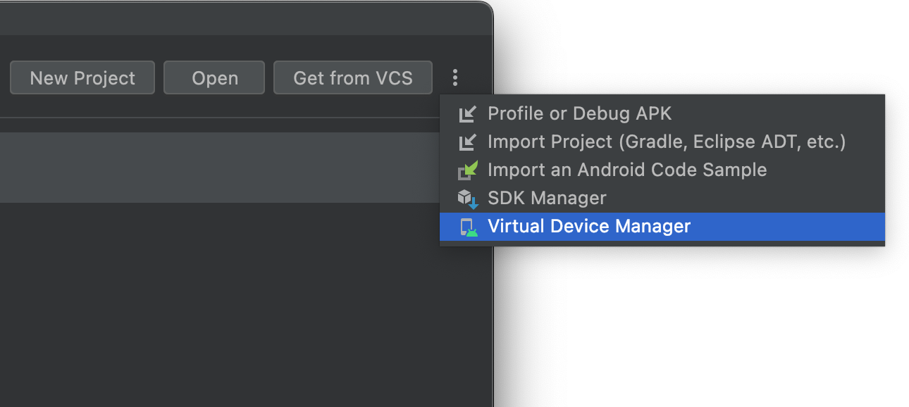
완료 확인 New Project라는 제목의 템플릿 선택 창이 열려요.
원본 화면: Google Android Developers 문서. 원본 화면 위에 교재의 안내 표시를 겹쳐 두었습니다. 운영체제·버전에 따라 아이콘 위치와 예시 값은 달라질 수 있어요.
할 일 왼쪽 Phone and Tablet 선택 → 오른쪽 아래쪽의 Empty Views Activity 선택 → 오른쪽 아래 Next. 그림의 선택 테두리 대신 이 교재의 빨간 안내 상자를 따라가세요.
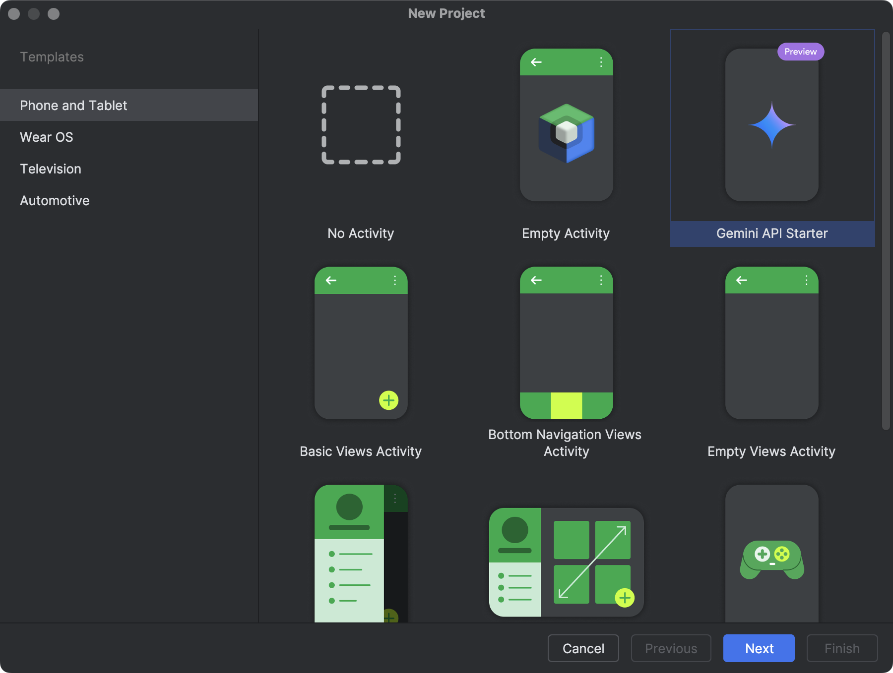
완료 확인 다음 화면의 템플릿 이름이 Empty Views Activity인지 확인하세요.
Views라는 단어가 중요해요. 목록에서 안 보이면 아래로 스크롤하거나 템플릿 검색을 사용하세요.
원본 화면: Google Android Developers 문서. 원본 화면 위에 교재의 안내 표시를 겹쳐 두었습니다. 운영체제·버전에 따라 아이콘 위치와 예시 값은 달라질 수 있어요.
할 일 Name: BeautyStart / Package name: com.example.beautystart / Save location: 기본 개인 작업 폴더 / Language: Kotlin / Minimum SDK: API 24 이상인 기본값 → Finish.
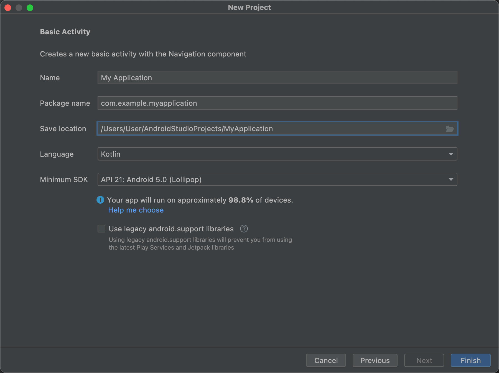
완료 확인 BeautyStart 프로젝트 창이 열리고 아래쪽에서 Gradle 준비가 진행돼요.
이 원본은 Basic Activity의 입력 항목 예시입니다. 여러분의 창 제목은 Empty Views Activity여야 해요. 그림의 My Application·API 21 값을 그대로 옮기지 말고 위 교재 값을 입력하세요. 최신 버전에 없는 Legacy 체크 항목은 찾지 않아도 됩니다.
원본 화면: Google Android Developers 문서. 원본 화면 위에 교재의 안내 표시를 겹쳐 두었습니다. 운영체제·버전에 따라 아이콘 위치와 예시 값은 달라질 수 있어요.
할 일 프로젝트가 열린 상태에서 View → Tool Windows → Device Manager를 순서대로 누르세요. 버전에 따라 Tools → Device Manager에도 있어요.
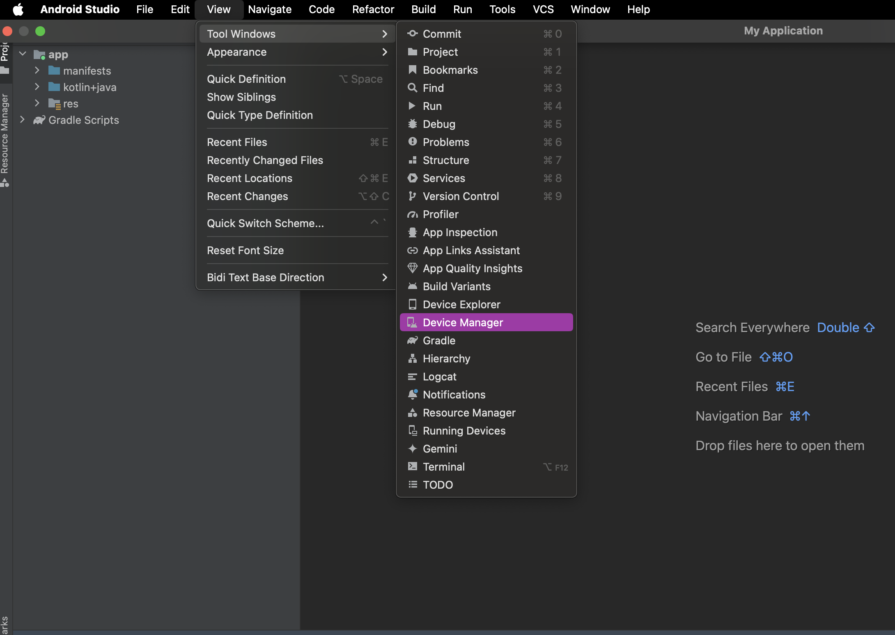
완료 확인 가상 기기 목록 또는 기기를 만들 수 있는 패널이 열려요.
원본 화면: Google Android Developers 문서. 원본 화면 위에 교재의 안내 표시를 겹쳐 두었습니다. 운영체제·버전에 따라 아이콘 위치와 예시 값은 달라질 수 있어요.
할 일 Device Manager에서 + 또는 Create Virtual Device를 눌러요. 이미 있는 일반 Phone 기기가 있으면 선택해 사용할 수 있어요.
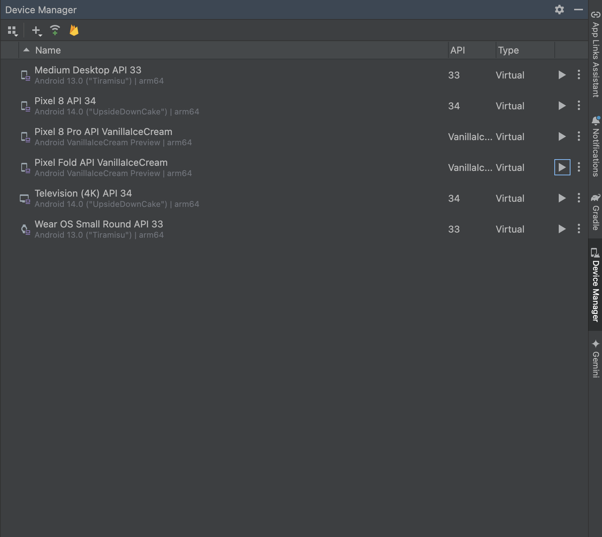
완료 확인 Select Hardware 또는 기기 구성 창이 열려요.
원본 화면: Google Android Developers 문서. 원본 화면 위에 교재의 안내 표시를 겹쳐 두었습니다. 운영체제·버전에 따라 아이콘 위치와 예시 값은 달라질 수 있어요.
할 일 Phone 분류 → 일반 Pixel Phone 하나 선택 → Next. 특정 모델 이름을 똑같이 맞출 필요는 없어요.
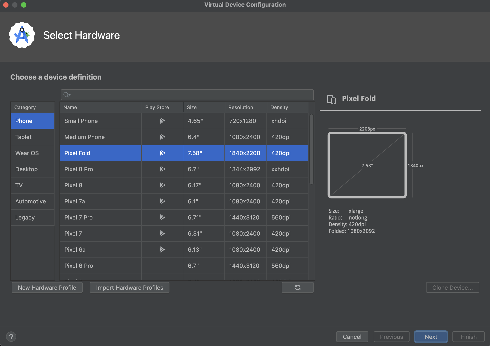
완료 확인 선택한 가상 폰에 설치할 시스템 이미지를 고르는 단계로 넘어가요.
원본 화면: Google Android Developers 문서. 원본 화면 위에 교재의 안내 표시를 겹쳐 두었습니다. 운영체제·버전에 따라 아이콘 위치와 예시 값은 달라질 수 있어요.
할 일 현재 안정 Android 버전의 권장 이미지를 선택해요. 다운로드 표시가 있으면 누르고 라이선스 확인 후 완료를 기다립니다. 기기 CPU와 맞는 Studio 권장 이미지를 사용하세요.
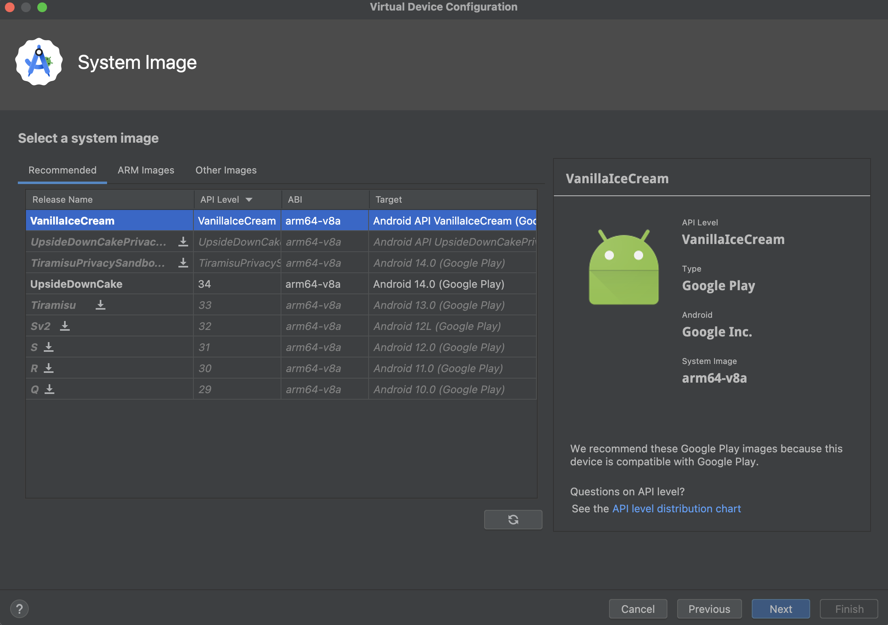
완료 확인 다운로드가 끝난 이미지를 선택한 채 다음 단계로 진행할 수 있어요.
최근 Studio는 이 설정을 한 창으로 합쳐 보여 줄 수 있어요. 다운로드가 끝났다는 표시를 확인하고 다음 또는 Finish로 진행하세요.
원본 화면: Google Android Developers 문서. 원본 화면 위에 교재의 안내 표시를 겹쳐 두었습니다. 운영체제·버전에 따라 아이콘 위치와 예시 값은 달라질 수 있어요.
할 일 기기 이름과 선택한 시스템 이미지를 확인한 뒤 Finish. Device Manager 목록에서 해당 기기의 재생(▶) 버튼을 눌러 가상 폰을 켭니다.
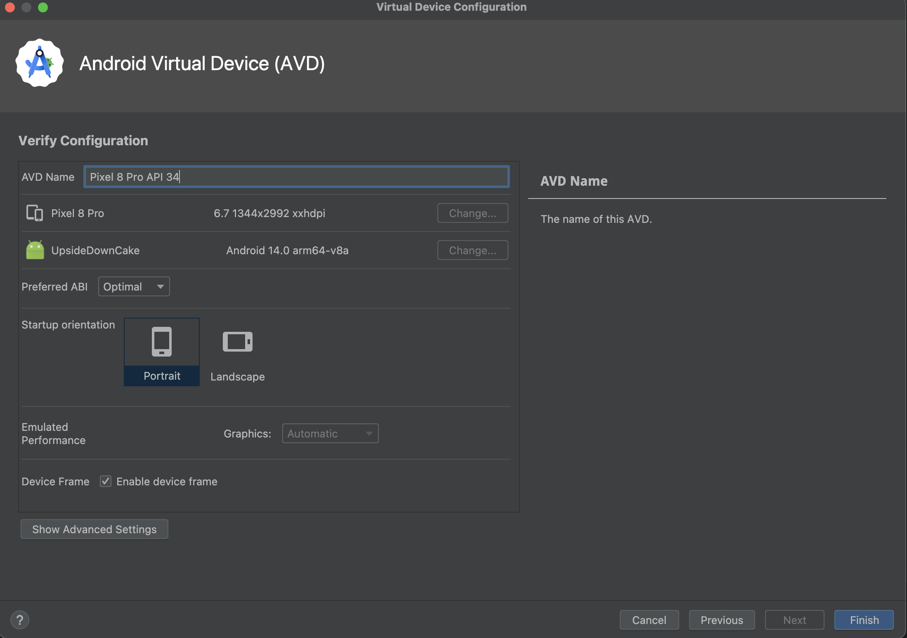
완료 확인 잠금 화면 또는 홈 화면이 보이는 가상 폰이 시작돼요.
원본 화면: Google Android Developers 문서. 원본 화면 위에 교재의 안내 표시를 겹쳐 두었습니다. 운영체제·버전에 따라 아이콘 위치와 예시 값은 달라질 수 있어요.
할 일 상단 실행 구성이 app인지 확인 → 기기 목록에서 만든 Phone 선택 → app 오른쪽의 삼각형 Run을 한 번 눌러요.
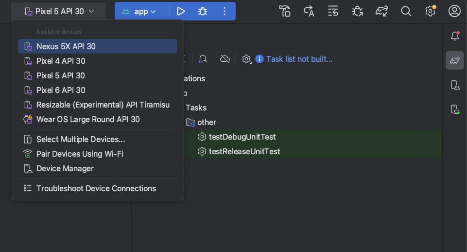
완료 확인 아래 Build가 진행되고 잠시 뒤 가상 폰에 앱이 열려요. Run을 여러 번 연속 누를 필요는 없어요.
원본 화면: Google Android Developers 문서. 원본 화면 위에 교재의 안내 표시를 겹쳐 두었습니다. 운영체제·버전에 따라 아이콘 위치와 예시 값은 달라질 수 있어요.
할 일 View → Tool Windows → Build를 열어요. Build Output 탭을 선택하고 마지막 결과를 확인합니다.
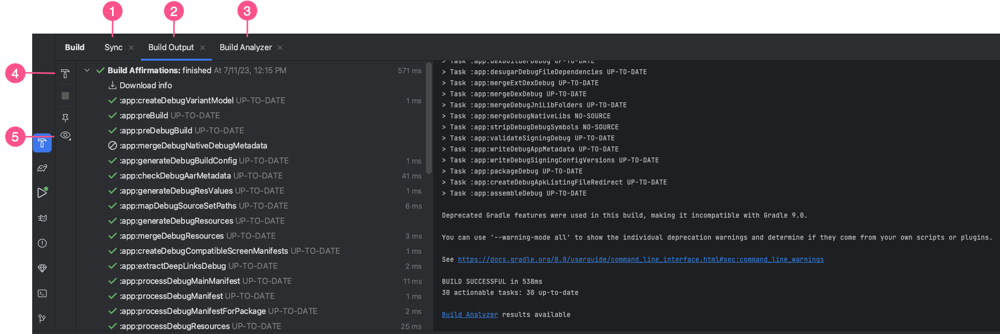
완료 확인 BUILD SUCCESSFUL 또는 빌드 성공 표시가 보이면 조립은 성공했어요. 그다음 폰의 실제 화면도 확인해야 실행까지 확인한 것입니다.
원본 그림의 프로젝트 이름·작업 수·시간은 예시예요. 같은 숫자가 나올 필요는 없습니다. 빌드 성공은 모든 기능이 맞다는 뜻은 아니므로 버튼도 직접 눌러 보세요.
원본 화면: Google Android Developers 문서. 원본 화면 위에 교재의 안내 표시를 겹쳐 두었습니다. 운영체제·버전에 따라 아이콘 위치와 예시 값은 달라질 수 있어요.
할 일 왼쪽 app → res → layout → activity_main.xml 두 번 클릭. 편집기 오른쪽 위 Code(코드) 또는 Split(분할) 모드를 선택해요.
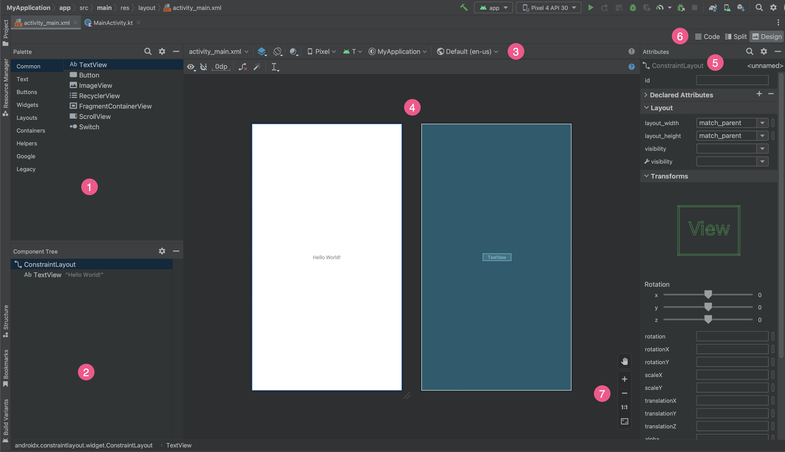
완료 확인 XML 글자를 입력할 수 있는 영역이 보여요. Design만 열려 있으면 코드 입력 영역이 없을 수 있어요.
원본 화면: Google Android Developers 문서. 원본 화면 위에 교재의 안내 표시를 겹쳐 두었습니다. 운영체제·버전에 따라 아이콘 위치와 예시 값은 달라질 수 있어요.
따옴표 안의 제목만 바꾸고 저장하세요. Preview에서 확인한 뒤 Run으로 폰의 실제 화면도 봅니다.
완료 확인 수정한 제목이 폰에서 보입니다. 미리보기 성공과 기기 실행 성공을 각각 확인해요.
키보드 조작을 설명하는 교재용 그림입니다. 실제 프로그램 화면 캡처는 아닙니다.